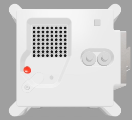

Introduction
Égaye la routine quotidienne des astronautes de la Station spatiale internationale en leur affichant un message et l'humidité relative à bord, à l’aide du Sense HAT de l’ordinateur Astro Pi.
Le matériel Astro Pi Mark II est si récent que les ordinateurs n'ont même pas encore de nom. Nous donnerons aux ordinateurs Astro Pi le nom de deux scientifiques européens inspirants. Tu peux aider à choisir comment ils s'appelleront en votant pour ton nom préféré dans le cadre de ton programme Mission Zero.
Tu utiliseras l'émulateur en ligne Sense HAT pour créer ton programme, aucun matériel supplémentaire n'est nécessaire - tout se fait dans un navigateur Web. S'il répond aux critères d'éligibilité, ton programme terminé sera exécuté dans l'espace sur la Station spatiale internationale (ISS) ! Tu recevras également un certificat spécial qui indique exactement où se trouvait l'ISS lorsque ton programme a été exécuté.
Nous annoncerons les noms choisis pour les nouveaux ordinateurs Astro Pi au printemps 2022.
Ce que tu feras
Voici un exemple du type de programme que tu peux créer. Clique sur Run (Exécuter) pour le voir en action.

Ce que tu vas apprendre
Tu découvriras l'Astro Pi et apprendras à l'utiliser et à faire les actions suivantes : + afficher des messages et ajouter des couleurs + créer des images + mesurer l'humidité à l'aide d'un Sense HAT
Ce projet couvre des éléments des sections suivantes du Raspberry Pi Digital Making Curriculum :
Ce qu'il te faut
Matériel informatique
- Un ordinateur, un iPad ou une tablette avec une connexion Internet
Logiciels
- Un navigateur Web (par exemple Google Chrome) pour ouvrir https://trinket.io/mission-zero
Notes pour les enseignants et les mentors
Cette activité peut être réalisée en 1h30. Organisez vos élèves en équipes de deux à quatre personnes et laissez-nous les guider dans l'écriture d'un court programme Python pour afficher un message personnel et l'humidité relative sur l'Astro Pi.
Consultez les directives officielles pour Mission Zero.
Vous devrez vous inscrire au défi Mission Zéro pour permettre à votre ou vos équipes de participer.
-
Rendez-vous sur la page de l'émulateur Trinket Mission Zero.
-
Remplissez le formulaire et cliquez sur Submit (Soumettre)*.
* Veuillez noter que ce formulaire d’inscription est disponible en anglais seulement.
Les champs du formulaire incluent :
-
Nom de l'enseignant/mentor
-
Nom d'équipe
-
Nombre des membres de l'équipe
-
Noms et âges des membres de l'équipe
-
Dans quelle langue avez-vous consulté les directives de Mission Zero ?
Un compte Trinket sera créé pour vous (si vous n'en avez pas déjà un, ou si vous n'êtes pas connecté). Vous pouvez créer un compte par adresse e-mail. Chaque compte a son propre code de salle de classe, et vous devez donner ce code à votre ou vos équipes quand elles sont prêtes à soumettre leurs programmes.
Affichez votre code de salle de classe quelque part où il sera visible, par exemple sur un tableau blanc ou en utilisant un projecteur, et commencez l'activité.
Nous avons créé un document imprimable de deux pages qui couvre les points clés de Mission Zéro et que les élèves et les jeunes peuvent utiliser avec ce projet en ligne.